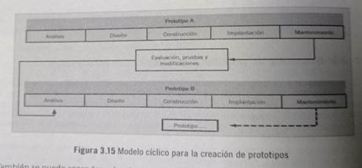
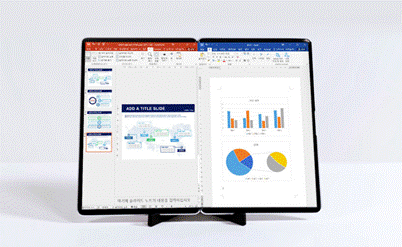
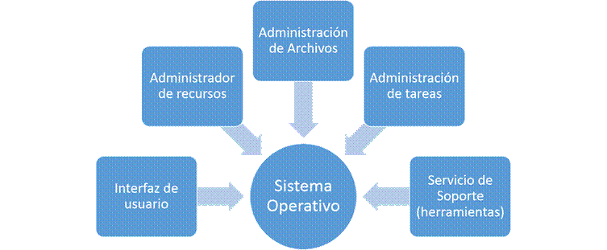

Los prototipos son un método muy utilizado para el diseño y desarrollo de sistemas. Debido a su versatilidad, reducen significativamente las horas de trabajo y los costos de desarrollo. Incluso se pueden llegar a proponer nuevos y mejores sistemas como resultado de los procesos interactivos en los que diseñadores y usuarios interactúan mientras revisan y realizan pruebas en el sistema prototipo.

Al modelo preliminar aceptado por el usuario en acuerdo con los diseñadores se le conoce con el nombre de prototipo. Será el primer modelo a probar y utilizar, y estará sujeto a continuos cambios y adecuaciones en las fases de diseño y desarrollo, por lo que sus características no estarán completamente definidas todavía. Este proceso aparentemente tedioso facilitará la detección de errores, omisiones o fallas en algunas definiciones de procesos en cuanto a su funcionalidad y presentación. En estos casos, es mucho mejor desarrollar modelos preliminares y corregirlos cuantas veces sea necesario que modificar un sistema terminado.
Un prototipo se define como la representación preliminar de un modelo futuro, operable, ampliable y modificable, que considera las características iniciales propuestas por el usuario, sin dejar de ser un modelo básico que tendrá que ser mejorado cada vez más. Es la primera versión o modelo de un producto, en este caso del sistema de información, que incorpora las características mínimas del producto final.

Los prototipos son fáciles de crear e implican bajos costos para explorar la factibilidad del concepto preliminar. Pueden hacerse con una simple hoja de papel y materiales fáciles de adquirir, con herramientas creadas para este fin o con la ayuda de un diseñador o desarrollador profesional de prototipos. El objetivo del prototipo es tener una forma de visualizar, mejorar y afinar un producto, sin olvidar que puede funcionar bien en teoría más no en la práctica. Por otra parte, es una opción mucho más rápida que el ciclo de vida de desarrollo de sistemas sistemas de información.
El objetivo del prototipo es tener una forma de visualizar, mejorar y afinar
un producto, sin olvidar que puede funcionar bien en teoría pero no en la
práctica. En el modelo de desarrollo de prototipos los sistemas se crean siguiendo
un proceso iterativo o cíclico en vez de sistémico.
La creación de prototipos se utiliza cuando los diseñadores no tienen otra
opción.
Algunas metodologías para la elaboración de sistemas de información
utilizando prototipos plantean las siguientes etapas:
La creación de prototipos es un método muy utilizado tanto para
el diseño de sistemas de información como para el diseño de sitios web.
El prototipo de pantalla facilita la visualización y su evaluación respecto a
la posición de la información , los encabezados, los botones y la utilidad de
los mensajes.
El prototipo para la operación de procedimiento incluye entradas, cálculos,
recuperar información y actividades de salidas. Como los datos pocas veces
son ingresados de la forma correcta o en la secuencia válida, es por ello que
La aplicación se diseña para asegurar la detección de errores.
El prototipo para funciones básicas facilita la determinación de los
requerimientos, no es necesario desarrollar todos los módulos del sistema, sino
Los básicos, son aquellos que forman el núcleo de la aplicación. Incluye las
funciones primarias de la aplicación como edición y validación, y excluye las
secundarias como el manejo de archivos que no forman parte del procesamiento
esencial.
